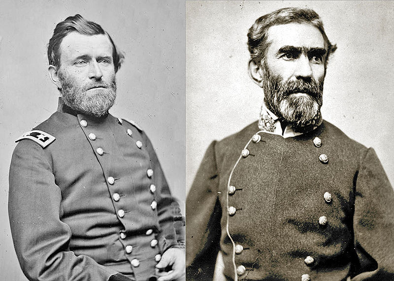
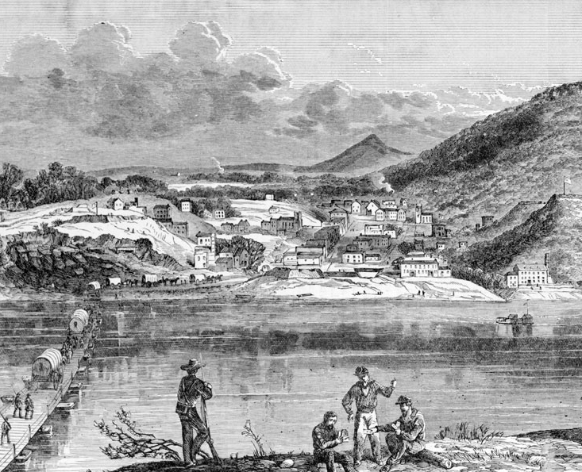

|
The battle for control of Chattanooga, Tennessee, took
place from November 23-25, 1863. The ultimate victory of
the Union Army, commanded by Major General Ulysses S. Grant,
placed the strategically important city of Chattanooga,
Tennessee, in Union hands for the remainder of the war.
After the Battle of Chickamauga, fought September 18-20th
in northwestern Georgia, the Union army under Major General
|

The commanding generals at Chattanooga,
Ulysses S. Grant and Braxton Bragg.
|
William S. Rosecrans retreated to Chattanooga, while the
victorious Confederate army occupied and fortified the
heights of Missionary Ridge and Lookout Mountain to the
south and west of the city. President Abraham Lincoln
ordered Major Generals Joseph Hooker and William T. Sherman
with their corps to Chattanooga, bringing the total Union
force to about 70,000. Lincoln also ordered General Grant
to Chattanooga. The President had just promoted Grant to
commander of all western Union forces. Grant immediately
replaced the incompetent Rosecrans with Major General George
H. Thomas, the "Rock of Chickamauga."
Confederate President Jefferson Davis sent Lieutenant
General James Longstreet and his three divisions from
Chattanooga to Knoxville, Tennessee, leaving Braxton Bragg with
about 40,000 men. Three brigades commanded by Major General
Carter L. Stevenson were positioned on Lookout Mountain. On
November 24, 1863, in what has been romanticized as the
"Battle above the Clouds," Hooker's men swept up the
northern slope of the steep mountain, causing Stevenson's
outnumbered troops to break and retreat to the southern tip
of Missionary Ridge.
The day before, Thomas's corps had gained Orchard Knob, a
small promontory facing the center of Missionary Ridge. As
Hooker moved towards the south of the Ridge and Thomas faced
the center, Sherman's troops prepared to attack the northern
tip, called Tunnel Hill, in what was intended to be the main
thrust of the Union Army.
The Confederates were positioned with their right flank
at Tunnel Hill, protected by the division under Major
General Patrick R. Cleburne. Stevenson's division held the
left flank, at the southern end of Missionary Ridge, while
Major General John C. Breckinridge's corps held the center.
Around 10 a.m. on November 25, Sherman's corps attacked
Cleburne's division, which managed to stave off the Federal
flank attack.
Thomas's Army of the Cumberland was instructed to take
the rifle pits along the base of the Ridge in a movement to
prevent Bragg from reinforcing his flanks. The Union
soldiers, about 20,000 strong, advanced from Orchard Knob
and easily overtook the Confederate rifle pits. However,
many Federals, unexpectedly and without orders, began moving
|

An 1894 engraving pictures Chattanooga
as it looked in 1863.
|
up the side of the Ridge, in a charge that is called the
"Miracle of Missionary Ridge." The Confederates at the top
were overwhelmed and scattered down the eastern side. Only
Cleburne's division remained intact enough to complete a
successful rearguard action, and soon the entire Confederate
Army of Tennessee retreated to Dalton, Georgia. Total
casualties numbered 5,824 for the Union and 6,667 for the
Confederacy.
Jefferson Davis accepted Bragg's resignation, and gave
command of the Confederate Army to General Joseph E.
Johnston. Grant secured Chattanooga for the Union Army, and
the city served as the supply base for Sherman's army as it
advanced towards Atlanta. Almost all of Tennessee was now
in Union hands, as well as the vital rail connections that
ran from Nashville to Chattanooga.
Source: Joan Waugh, ed., Facts on File Encyclopedia of American
History: Civil War and Reconstruction, 1856 to 1869 (New York: Facts on
File, 2003), 57.
|